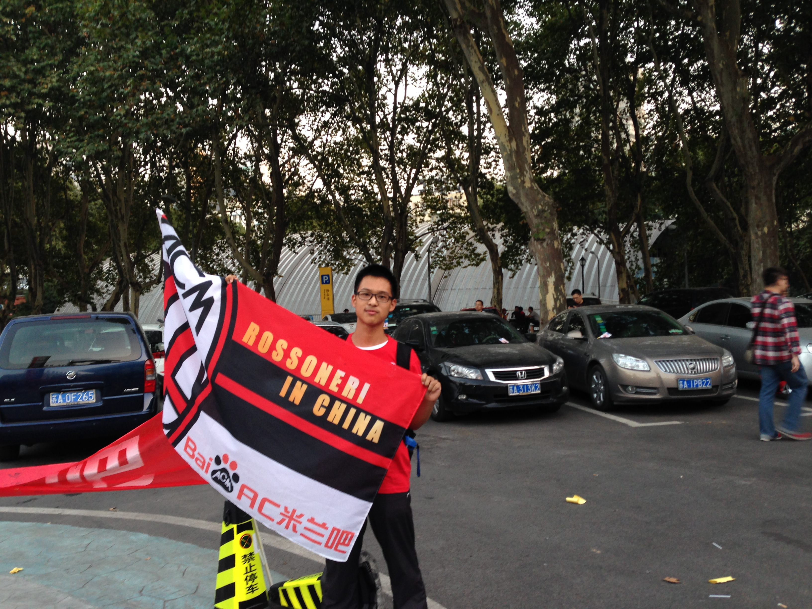

I hold broad interests in languages, history, sports, classical music and cooking. You're welcomed to share anything interesting with me!
My mother tongue are Xiang and Mandarin, and I have also learned English, some French, Japanese and Ancient Greek. It is interesting to investigate the differnece between pronuciation and tongues in languages (including dialects), the evolution and connections of vocabulary. You are welcomed to reach out to me.
I am currently working on Russian.
|

|
I hold a certification in Chinese martial arts, and also like swimming and soccer. I have participated online-marathon for 3 times. I have been a Rossonero of Milan (Lega Serie A, Italy) since 2006, it is a team with family atmosphere. It inspired me when I am down and I write commentaries about some of their stories. |
Mozart, Wagner, Vivaldi are my favorite.
For singers, I like Andrea Bocelli.